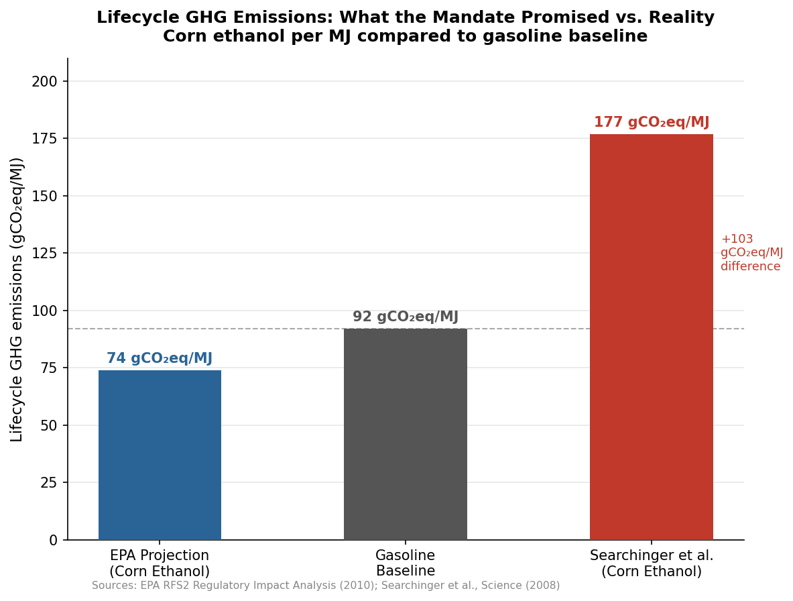

How America's ethanol mandate promised energy independence — and delivered something else entirely.
[Introduction text placeholder. Describe the Energy Policy Act of 2005 and the Energy Independence and Security Act of 2007 here. Explain what the mandate promised — reduced dependence on foreign oil and lower greenhouse gas emissions — and introduce the three unintended consequences the story will explore.]
[Continue with background on how ethanol mandates worked, what the renewable fuel standard required, and the scale of the policy change.]
This section will be completed by your partner and will include interactive visualizations showing the relationship between the ethanol mandate and global food price increases.
[Placeholder: Explain how the ethanol mandate dramatically increased corn acreage across the Corn Belt. Describe what the map shows — which states saw the largest expansions, and why North Dakota and South Dakota stand out. Reference the USDA NASS data source.]
[Continue: Discuss what this corn expansion meant for farmers' decisions — the economic incentive to plant more corn created by the mandate's guaranteed demand.]
[Placeholder: Transition text connecting the two maps. Explain that the corn acreage expansion shown above came at a direct cost — natural grasslands and wetlands were converted to cropland to meet the new demand. This sets up the CDL conversion map below.]
[Placeholder: Explain what the CDL conversion map shows — the percentage of each county's natural land (grassland and wetland) that was converted to corn between 2006 and 2012. Explain the color scale.]
[Discuss the geographic pattern — why Illinois and Indiana show high conversion rates despite not showing dramatic corn acreage increases. Reference the explanation we developed: those states had very little natural land remaining, so even small conversions represented a high percentage.]
[Placeholder: Explain the carbon emissions story. The mandate required corn ethanol to produce 20% fewer lifecycle GHG emissions than gasoline — the EPA's model showed this was achievable. But Searchinger et al. (2008) found that once indirect land use change was accounted for, corn ethanol produced 93% more emissions than gasoline.]
[Explain the key concept of indirect land use change — when US farmers convert food cropland to corn for ethanol, food production has to come from somewhere else globally, triggering deforestation and land clearing that releases massive amounts of carbon.]
[Note the methodological caveat: the bar chart shows lifecycle emissions per megajoule of fuel under each model. All three values are modeled estimates, not observed measurements. The gasoline baseline and Searchinger values come from Searchinger et al. (2008), Table 1. The EPA projection derives from the RFS2 mandated −20% threshold.]

[Placeholder: Summarize the three unintended consequences — food prices, land use, and carbon emissions. Tie them together as a systemic failure of partial-equilibrium thinking: the policy designers looked at direct effects but missed the indirect systemic responses that the mandate would trigger in global agricultural and land markets.]
[Discuss what happened next — the EPA has reduced ethanol mandates in recent years partly in response to this evidence. Note that the Searchinger research contributed to the political environment that made those reductions possible.]
[Closing thought: the biofuel case study is a reminder that well-intentioned policies can have large unintended consequences when they interact with complex global systems.]
A summary infographic will appear here showing the three unintended consequences of the ethanol mandate side by side.